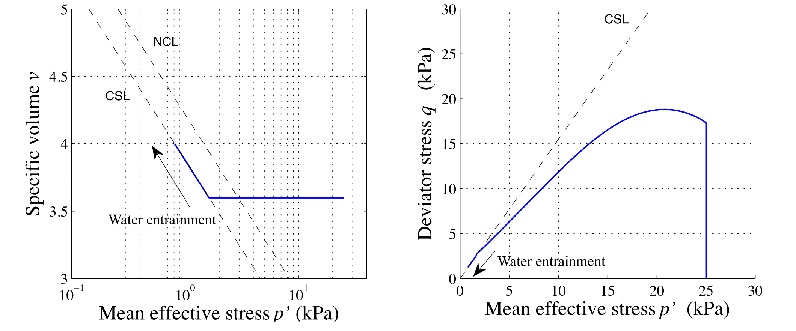

Large deformation modelling in geomechanics
Lattice-Boltzmann and Discrete Element Method
Krishna Kumar, kks32@cam.ac.uk
University of Cambridge
Kenichi Soga, soga@berkeley.edu
University of California, Berkeley.


NMG2017, Hamburg, Germany - 27 September 2017
Cambridge-Berkeley Computational Geomechanics
- Lattice-Boltzmann + Discrete Element Method
- Finite Element Method - Thermo-Hydro Mechanical Coupling
- Material Point Method
- Lattice Element Method

Global landslide hazard

Possible boundary conditions of submarine run‐out

- Presence of ambient water (larger drag force & less gravity).
- Water entrainment.
- Pore pressure does not dissipate.
Submarine landslides

Mechanism of submarine landslides
Modelling Test at 1g Condition

- Material type influences the mode of the flow.
- Target: Clay‐rich flow (Less diffusive, Hydroplaning).
Mechanism of submarine runout
MPM submarine landslide: Water entrainment
Effect of water content on the run-out (Taka., 2012)
LBM - DEM simulation of granular collapse in fluid
aspect ratio 'a' of 6
Lattice Boltzmann - MRT


\[f_{i}(x + dx, t +\Delta t) - f_{i}(x, t) = -S_{\alpha i}(
f_{i}(x, t) - f_{i} ^ {eq}(x, t))\]
- $S_{\alpha i}$ is the collisional matrix.
- Probability density of finding a particle : $f(x,\varepsilon, t) $, where, x is position, $\varepsilon$ is velocity, and t is time.


LBM-DEM fluid-solid coupling

$$\Delta t_{s}=\frac{\Delta t}{\mathit{n}_{s}} \qquad (\mathit{n}_{s}=[\Delta t/ \Delta t_{D}]+1) $$
- At every fluid iteration, $\mathit{n}_{s}$ sub-steps of DEM iterations are performed using the time step $\Delta t_{s}$.
- The hydrodynamic force is unchanged during the sub-cycling.
LBM laminar & turbulent flows


Smagorinsky model (LES):
$\nu_{s}(x,t)=(C_s \Delta)^2\sqrt{S_{ij}S_{ij}} \mbox{ ; } S_{ij}=\frac{1}{2}(\frac{\partial u_i}{\partial x_j}+\frac{\partial u_j}{\partial x_i})$Karman Vortex Street
Granular column collapse

Experimental results (Lube et al 2005)

Collapse in fluid

Granular collapse in fluid: Effect of aspect ratio
aspect ratio 'a' of 0.4
aspect ratio 'a' of 4
Collapse in fluid: Runout evolution


Critical time $\tau_c=\sqrt{H/g}$ (Staron and Hinch, 2005)
where, H = Height of the granular pile.
Runout: dry vs. fluid

Collapse in fluid: Effect of permeability
Dirichlet boundary conditions constrain the pressure/density at the boundaries (Zou and He, 1997)
$\rho_0=\sum_{a}f_{a} \mbox{ and } \textbf{u}=\frac{1}{\rho_0}\sum_{a}f_{a}$
Reduction in radius
Collapse in fluid: Effect of permeability
Reduction ‘r’=0.7R
Reduction ‘r’=0.9R
Collapse in fluid: Effect of permeability
Effect of permeability: stress

Effect of permeability: effective stress
Runout: effect of permeability

Effect of permeability: runout

Effect of permeability: kinetic energy

Effect of permeability: runout

Collapse on an inclined plane
aspect ratio 'a' of 6 on a slope of 5*
LBM - DEM a = 0.8 & 10,000 partilces
- LBM Nodes = 50 Million : DEM grains = 10000 discs
- Real-time = 2 seconds
- Run-time = 4 hours
- Speedup = 25x on a Tesla K20
2D to 3D
LBM multi-component multi-phase
Thank you!
Krishna Kumar, kks32@cam.ac.uk
www.cb-geo.com